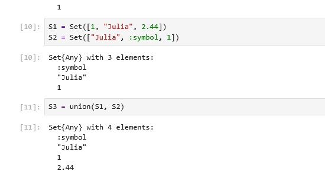
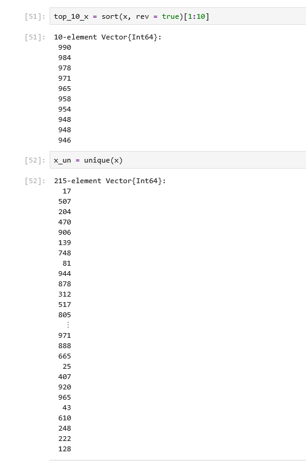
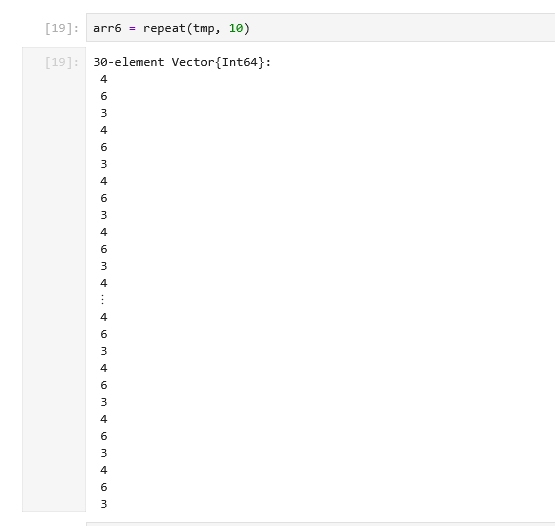
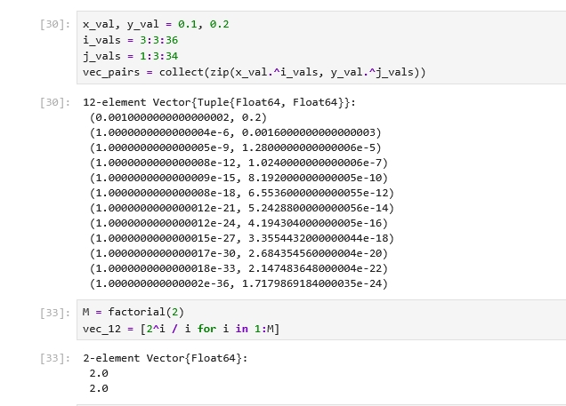
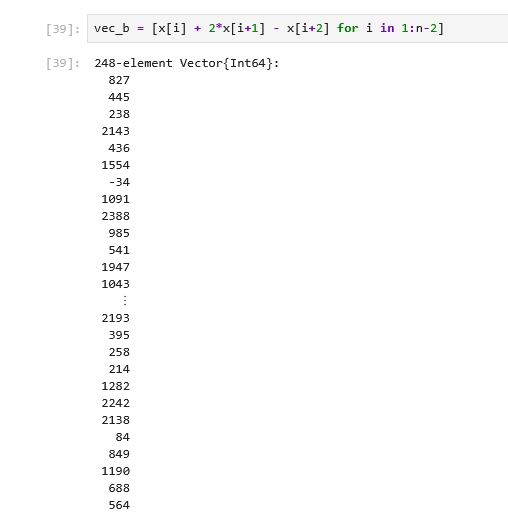
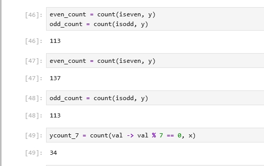
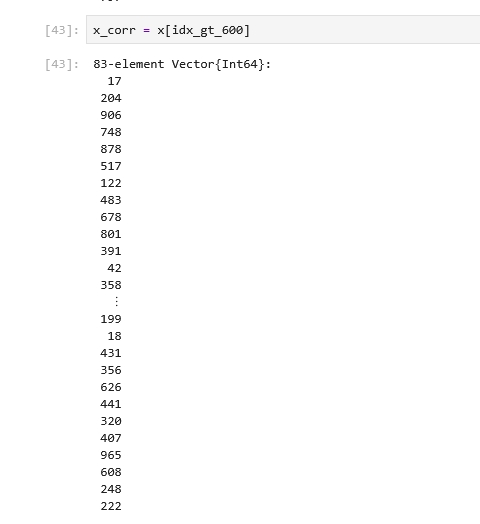
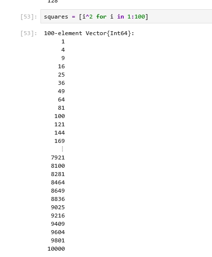
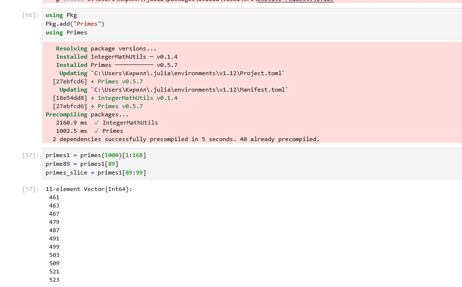
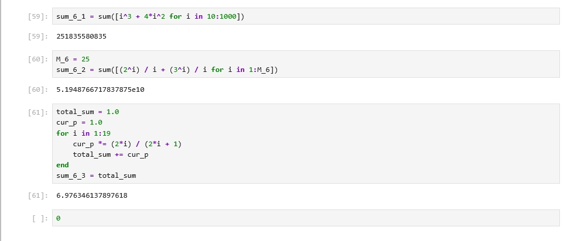

Цель работы
- Изучить структуры данных Julia: множества, кортежи, словари, векторы и матрицы.
- Освоить создание и преобразование массивов.
- Научиться применять фильтрацию, сортировку, статистические функции и пакет Primes.
Слайд 1. Множества
- Созданы множества A, B и C.
- Выполнено объединение попарных пересечений.
- Получено P = {0, 1, 3, 4, 7, 9}; |P| = 6.

Слайд 2. Диапазоны и фильтрация
- Создан массив чисел от 1 до 25.
- С помощью filter выбраны элементы, большие 20: [21, 22, 23, 24, 25].
- Рассмотрены прямой и обратный диапазоны.

Слайд 3. Повторение элементов
- Использованы fill, repeat и vcat.
- repeat(tmp, 10) повторяет весь вектор.
- fill(value, n) повторяет один элемент заданное число раз.

Слайд 4. Генераторы и zip
- Созданы векторы степенных выражений и строк fn1 … fn30.
- С помощью zip сформирован вектор из 12 кортежей.
- Генераторы позволяют компактно задавать вычисления.

Слайд 5. Операции над массивами
- Сформированы случайные массивы x и y длиной 250 элементов.
- Вычислены разности соседних элементов и линейные комбинации.
- Также применены тригонометрические функции поэлементно.

Слайд 6. Фильтрация и подсчёт
- Использованы findall, count, maximum и unique.
- Для одного запуска: элементов y > 600 — 83; чётных — 137; нечётных — 113.
- Количество элементов x, кратных 7, — 34.

Слайд 7. Сортировка
- sortperm позволяет упорядочить x по значениям y.
- sort(x, rev=true) возвращает элементы x в порядке убывания.
- unique удаляет повторяющиеся значения.

Слайд 8. Квадраты и простые числа
- Построены квадраты чисел от 1 до 100.
- Последние значения: 9604, 9801, 10000.
- В диапазоне до 1000 найдено 168 простых чисел.

Слайд 9. Пакет Primes
- 89-е простое число равно 461.
- Срез простых чисел с 89-го по 99-е: [461, 463, 467, 479, 487, 491, 499, 503, 509, 521, 523].
- Для вычислений подключён пакет Primes.

Слайд 10. Вычисление сумм
- Вычислены три суммы из задания.
- sum_6_1 = 251835580835.
- sum_6_2 ≈ 5.1948766717837875e10.
- sum_6_3 ≈ 6.976346137897618.

Выводы
- Изучены основные структуры данных Julia и операции над ними.
- Освоены генераторы, фильтрация, сортировка и статистическая обработка массивов.
- Получены практические навыки работы с пакетом Primes.
- При работе с большими произведениями учтена возможность переполнения Int64.